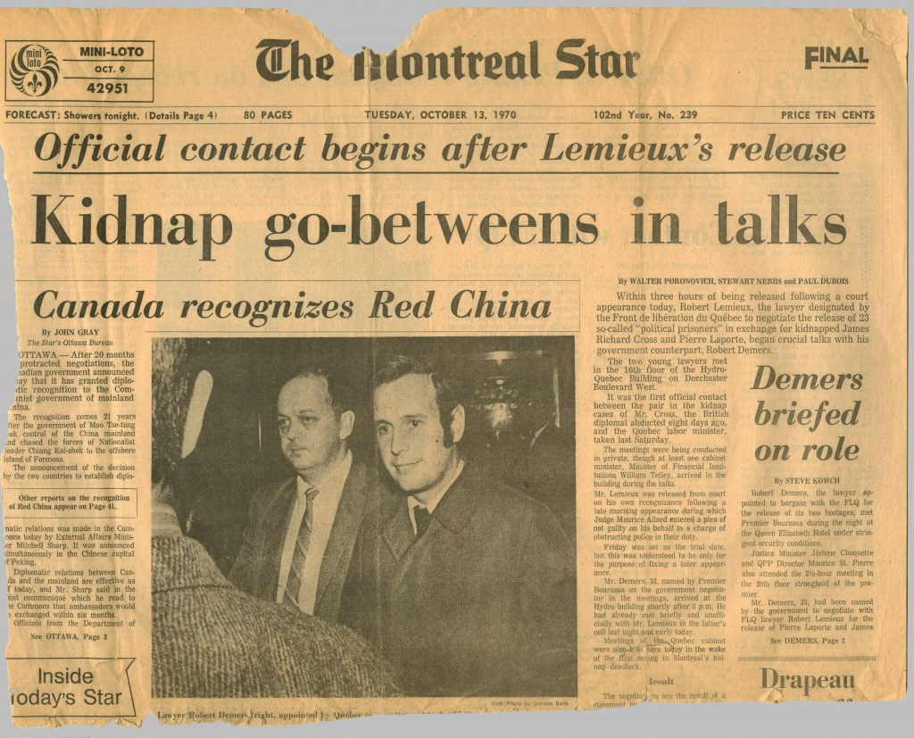

1. The Quiet Revolution (1960s)
Why it matters: In the 1960s, there was a big change in Quebec called the Quiet Revolution. People in Quebec started to feel that they needed more control over their own lives. Especially with things like education and healthcare. The Catholic Church’s control in Quebec started to become less and less and there was a rise in the idea of Quebec becoming its own nation. This later created things like the FLQ.
2. The Rise of the FLQ (1960s)
Why it matters: The FLQ (Front de libération du Québec) was a group of people that wanted Quebec to be its own nation. They thought the government wasn’t doing enough for the French people in Quebec. They used violence, like bombings, to try to force change from the government. This created fear and tension in Quebec, especially because their actions were getting more violent.
3. The Kidnapping of James Cross (October 5, 1970)
Why it matters: On October 5, 1970, the FLQ kidnapped James Cross who was a British Diplomat. This was a big deal because it showed that the FLQ was ready to do anything to get their message across. The kidnapping forced the government to take action and then the military was called in. This was just the beginning of the October Crisis.
4. The Kidnapping of Pierre Laporte (October 10, 1970)

Why it matters: Just a few days after the kidnapping of James Cross, on October 10, the FLQ kidnapped Pierre Laporte who was a Quebec government minister. This made everything worse because it showed that the FLQ wasn’t just after people outside of the government but also the people in charge. The government decided they had no choice but to use even more force, and this led to the War Measures Act being put in place. Laporte was dead soon after, which made the crisis even more worse.